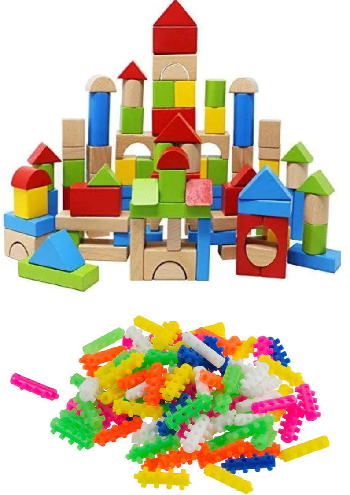

Nací en abril del año 2005, en el corazón de la ciudad de Guatemala, en el famoso Hospital San Juan de Dios. No recuerdo nada de aquel momento, pero seguramente despues de haber sido torturado por los doctores mientras evaluaban la calidad de mis reflejos y pulmones, fui entragado a los calidos y arruyadores brazos de mi madre, la mas perfecta mujer que existe en este planeta, que para mi total orgullo y fortuna era yo el quinto de sus 6 retoños.
Con el tiempo me fui dando cuenta que aquella mujer que me arruyaba todos los dias con delicadeza y compascion en sus brazos, no solo preparaba las mejores papillas con Nestum que cualquier ser humano pudiera probar, si no que era tambien extremadamente inteligente con sus decisiones para la vida, habia escogido como padre para todos sus tesorors a un joven Ingeniero Indsutrial, que a sus apenas 32 años ya estaba al mando de un equipo de 8 ingenieros y hacia la labor de gerencia para uno de los consolidados industriales mas grandes del pais, el ingenio la Union. En aquella epoca en que la palabra "internet" en Guatemala era un termino conocido solo por los aficionados a la informatica. El joven ingeniero resolvia con su equipo los mas grandes enigmas de la ingenieria industrial, leyendo manuales de fabrica y resolviendo con papel y lapiz los torques mas malignos que las matematicas y la maquinaria le puedieran ofrecer. Ambos siempre brillaron en sus labores cotidianas, mi padre por su capacidad intelectual y mi madre que con gran destreza hacia el trabajo mas duro, salvaguardar el hogar de 6 pequeños terremotos
Cuando busco en los mas profundo de mi memoria, el primer recuerdo lucido que tengo, siempre es un mediodia soleado de algun mes del año 2009, tenia 4 años apenas y estaba cursando el primer año de la Preprimaria, iba de la mano camiando hacia la escuela con mi madre, no recuerdo que estaba pensando, pero seguramente me pregunta el por que tenia que ir a una de estas actividades si podia estar haciendo algo mejor en mi casa, como ver un episodo de Ultraman Tiga en canal 13 o tal vez un corto de 15 minutos de Pedro PicaPiedra en canal 11, cualquier cosa seria mejor, incluso ver un episodio completo de Mr Maker y sus 5 figuras paralantes seria mejor. De igual forma ahi estaba, tenia puesto un disfraz de calabaza que no me lograba cubrir por completo, mi madre muy ingeniosamente me habia puesto papel de china color verde en los brazos y las piernas para simular las raizes de una calabaza, que claramente no queria estar ahi. ¿Era como una Kermes?, ¿o una competencia de frutas y verduras? y gusanos... recuerdo perfectamente que una maestra llego con disfraz de gusano, ¿estaba buscando comerse a las manzanas? ¿o a las calabazas?.
Cuando comenzo la actividad los recuerdo son cada vez mas lejano, hubieron muchos actos y algunos bailes de otros estudiantes, recuerdo el vaso de leche que mi madre sostenia con sus manos mientras yo tomaba de el y sostenia un bolsa de dulces, yo estaba esperando que alguien se acercara y me los regalara seguramente por que era demasiado timido y delgado como para lanzarme en aquella feroz competencia llamada "piñata". Mi actitud no logro que estuviera ni cerca de ganar el primer lugar en la competencia de disfrazes ese dia, pero gane uno de los recuerdos mas gratos y hermosos de vida al lado mi madre.
Aquel mismo año, cuando fui una calabaza..., mi familia completa se mudo, fue un viaje corto quizas a 50 minutos de nuestro antiguo hogar pero para mi era como un cambio de mundo, todo lo que conocia antes ahora ya no estaba, no era el mismo parque, no eran las misma tiendas, no te ladranban los mismos perros... pero mas immportante aun, no seria la misma escuela, no serian las mismas maestras y tampoco los mismos amigos. No me preocupa el por que y tampoco lo entendia, solo recuerdo que de un dia a otra habia cursado los 2 años de preprimaria y nadie me habia dicho, sabia leer algunas oraciones y escribir palabras completas, se me daba jugar con tronquitos de plastico y bloquesitos de madera bastante bien, todos creian que la inteligencia de mi padre habia por fin sido heredada y no solo mi familia tambien en la nueva escuela donde estaba, creyeron que no era apto para la prepimaria y como arte de magia el director opto por adelantarme 2 años.
Pero haci como por arte de magia me adelantaron 2 años, por arte de magia perdi el por que me habia adelantado, nadie sabe (ni yo) el por que ni adonde se fue esa inteligencia que habia heredado, el resto de la primaria nunca fui el mejor alumno, tampoco estuve cerca de serlo, se me daban un poco las matematicas pero nada mas, y si era peculiar por ser pequeño y delgado en mi antiguo grupo, ahora con un grupo que me llevaba 2 años mi aparencia resaltaba mas, mejor dicho, resaltaba menos por que siempre quedaba oculto entre los demas
Era el año 2014, cuando la epica Alemania levanto aquella copa en el mundial de Brasil, lo tengo grabado en mi memoria como casi ninguna cosa, la euforia y alegria que causaba el Futbol, era mi nuevo pasatiempo y ver aquellos jugadores en el campo te invitaban a creer y soñar que tu tambien podias ser como ellos
Habia un chico a 2 casas de mi, su padre era un completo aficionado al futbol como niguno, en su casa habian posters del tamaño de una ventana con la imagen de sus estrellas del futbol europeo, una repiza con tenis que uso en su juventud, las camisolas de cada un de los equipos de los que habia sido parte. Aunque su hijo era algo timido y un poco lento en su actitud, siempre lo estaba animando a jugar, tanto asi que decidio armarle su propio equipo de futbol, formado por casi todos los niños de la colonia (casi 15), nos emprendimos en la preciosa y grata tarea de jugar un torneo de futbol, el nombre del equipo se discutia entre "Saiyajines Blue", "Barcelona" o "Los tigres del Norte", nada de eso dijo Don Rony, con sus peculiares lentes de sol, pantaloneta y una camisola de Leonel Messi, seremos "Colonial" por que nuestro futbol es de colonia, recuerdo perfectamente
8 partidos y 7 victorias, habiamos arrasado con la categoria "Mini Moscos", el dia de la final recuerdo perfectamente el grato 3 - 1 que nos dio la victoria, yo siempre fui la muralla del equipo, tenia que estar primero yo en el suelo antes que un balon entrara en la porteria, hubo musica, el alcalde del municipio en aquel entonces llego a repartir las medallas a los primeros 3 lugares y condecorar a los mejores jugadores del torneo, ahi estaba yo como el portero menos vencido. Con la simplesa de 1 Cheto, 1 pedazo de Pitza y 1 vaso de Coca Cola, Don Rony no solo no estaba dando un reconocimiento por la victoria, nos estaba dando un invalorable momento que sellaba amistades de la infancia que perduran hasta el dia de hoy.
La pandemia de Covid 19 seguramente quedara grabada en la memoria de todas las personas que lo vivieron, por que fue algo tan repentino, inusual y drastico, se trataba de una enfermedad de la cual tenia que evitar el contagio o estabas exponiendo tu vida y la de tu familia. El futbol se acabo claramente y lo mio paso de un dia otro a los videjuegos, pero no los mas recientes por que no tenia consola en ese momento, solo algunos retro, titulos como Half Life, Counter Strike, Portal2 tenian los soundtrack que mas resonaban en mi cabeza cuando hacia casi cualquier cosa. Era como si mi personalidad estuviera tomando otro camino, como si las circunstancias de la vida me quisieran dar una vuelta por otra parte.
¿Quien sabes que es un numero Binario?, escuche decir al profesor Stanley, lo veia atraves de la computadora en una llamada por zoom, todos se quedaron callados, tambien yo, era normal que nadie pudiera responder las preguntas de aquel profesor de informatica, tal vez por que ninguno de nosotros habia escuchado en la vida sobre esa rama, o por que el profesor Stanley hablaba tan rapido que casi no entendias que estaba diciendo. Sin importar que nosotros apenas pudieramos entender sus clases en un de aquellos dias recuerdo perfectamente una clase en especifico, abrio el navegador y tecleo lentamente www.programiz.com, con su particular forma de hablar, dijo algo inaudible por la velocidad pero recuerdo haber escuchado en algun momento "Python", de todo el bachillerato es casi lo unico que estoy seguro que aprendi, Python. Python, hacia que las cosas tuvieran sentido, de alguna manera me sentia bien, no me gustaba hacer la tarea, pero cuando se trataba de Python era diferente, ni siquiera era necesario que fuese un tarea, yo lo buscaba por mi propia cuenta
Mi primer programa relevante en aquella tecnologia era un uno que obtenia el factorial de un numero entero, me sentia tan maravillado, de cierta forma sentia que tenia la inteligencia de una computadora en mis manos, a mis programas les podia decir que hacer y que no hacer, como funcionar y como no funcionar, algo que hubiese sido delirante uno meses atras estaba pasando, por primera vez en mi vida habia sobrepuesto estudiar a jugar tranquilamente un partida de Ricochet. Pues si la vida me habia quitado el futbol ahora me habia devuelto ese lenguaje raro para hablar con las computadoreas, Python
A finales del bachillerato ya lo sabia, que era aquello que a lo que podria dedicar mi vida si no tuviera que trabajar, mi historial de YouTube estaba repletos de videos como "Curos de Python desde cero", "Pygame en 9 horas", "Tkinter curso intensivo", no solo me sentia comodo con el lenguaje, tambien queria saber mas, mas de Python, mas de informatica, mas de computadoras

A principios del 2023, por deciscion mia, mis padres me escribieron en la carrera "Administracion de Bases datos SQL Server" en INTECAP de zona 7, el ingeniero Manuel Doño de quien siento mucha admiracion y respeto al dia de hoy, siempre nos fascinaba con los poderes y la magia de SQL, quizas al inicio de clase nos enseñara como hacer un cursor y disparar con triggers todos los cambios realizados a una tabla de auditoria, despues jugaria una partida de solitario mientras nosotros replicabamos la magia de SQL en nuestras computadoras y al final de clase nos contaba como hacer una inyeccion SQL o como en sus 30 habia defendido servidores del gobierno de un DDoS masivo.
Al mismo tiempo que empezaba amar las bases de datos mi obsecion por programar se seguia alimentando, ya no era un novato que buscaba recursos nuevos por YouTube, ahora solia pasar hasta 5 horas diarias en W3schools, cada insignia, cada bug, cada Sintax Error que se pintaba en el CMD, forjaban cada dia a un nuevo y mejor programador. Recuerdo aquel video que nos enseño el Ingeniero Manuel a finales del curso, iniciaba con la mitica frase de Steve Jobs "Todo el mundo deberia aprender a programar, por que te enseña a pensar". Ya no era solo la programacion lo que me fascinaba, tambien las personas que hacian y habian logrado grandes proezas con las computadoras. En clase vimos The Social Network, Pirates of Sillicon Valley y la mitica presentacion del Iphone por Steve Jobs en el 2007. El Ingeniero Manuel no solo era extremadamente bueno enseñando, tambien sabia como hacerte creer que con mucho constancia tu tambien podias lograr esas grandes hazañas que vimos en el proyector.
Con mi stack de PHP, SQL Server y Python sentia que era hora de algo nuevo, tenia en mi portafolio de GitHub, un intento de replicar Facebook, una
base de datos para un centro comercial y algunos algoritmos en Python. Unos cuantos videos de YouTube, algunas lecturas rapida en la web y media hora en
Canva y estaba listo, un CV precioso y perfecto, con algo de rebeldia pero muy cuadrado para no perder el tecnicismo. No importaba que lenguaje o
tecnologia estuviera solicitando la oferta yo mandaba mi postulacion, fueron 3 largas semanas, de cierta forma me sentia decepcionado, yo era tan bueno
desarrollando pero aquel momento de quizas 100 empresas donde habia solicitado 4 me habian llamado pero nada estaba concretado
Debio haber sido alguno de esos cientos de clicks que hice sobre aquel boton redondo color azul que aparece debajo de cada postulacion en Linkedin. Fue una llamada por la mañana, luego una llamada por Teams con el director de ingenieria, de todos los lenguajes que menciono solo uno logre reconocer, Cobol, me hizo sentir un escalofrio por todo el cuerpo, ese lenguaje maligno que hacia sufrir hasta los mas experimentados, ese lenguaje sobre el que corre la economia global, ese lenguaje que es apto solo para los jubilados. En la entrevista tecnica eramos 5, a cada uno nos dieron unas 8 hojas, las primeras 2 contenian una solicitud de empleo y las otras 6 eran una prueba tecnica, solo teniamos un lapicero y 2 horas para resolverla. Todos los participantes eran mayores a mi, con semestres avanzados de ingenieria. No me senti intimidado y mantuve en marcha la mentira que habia planeado, segundo año de ingenieria en sistemas, 15 cursos aprobados escribi en mi solicitud.
El tiempo ya iba corriendo y casi todos los participantes habian terminado, menos yo y el chico de enfrente, habia logrado ya de terminar la prueba y repasaba cada un de las respuestas, para mi sorpresa estaba seguro de cada una de las palabras que habia escrito. Llamaron a 2 chicos por su nombre, y mi mente empezo a jugar con las cicurnstancias, ¿ellos habian sido elegidos? ¿me habia equivocado en todas las respuestas? ¿el vaso de agua enfrente de cada participante era una forma de prueba?. Los 2 chicos que habian llamado se retiraron de la oficina, los otros 3 fuimos llamdos uno a uno para hablar a solas con el director de ingenieria. Cuando me llamaron las manos me estaban sudando, apenas y recordaba algunas de las respuesta que habia practicado, Edgar me miraba siempre directo a los ojos, yo trataba de sonreir y mantener la calma en cada respuesta, estrechamos la mano y me retire del lugar, ¿habia perdido?, ¿me iban a llamar de nuevo?, ¿si no habia sido yo entonces quien habia sido elegido?.
2 dias despues mi celular sono, casi se me sale el corazon cuando vi el contacto que llamaba, unos 6 minutos despues estaba confirmado, seria un programdor Junior de RPG, Cobol y DB2, no sabia nada de ninguna de las tecnologias pero la empresa esta dispuesta a capacitarme hasta que tuviera un nivel apto.
Python y RPG son como hombres y mujeres, son similares pero completamente diferentes, Python es un lenguaje enfocado en hacerlo todo facil, RPG es un lenguaje enfocado en hacerlo todo dificil, ya no estoy leyendo cadenas JSON que envia el Front-End, ahora estoy escribiendo programas bancarios transaccionales, los tiempos de entrega no me los pongo yo mismo y el cliente quiere programas 100% funcionales, nada puede quedar a medias, no escribo desde cero mis propios programas bajo mi propia logica, muchas veces estoy buscando bugs en codigo de personas que no conozco y en su momento implementaron de una forma que convenia para ellos pero no convenia para el resto y por ultimo y no menos aburrido, documentar.
Ahora curso el primer año de Universidad y he logrado mantener mi puesto de trabajo (RPG es complicado), siempre trato de ser agredecido con mis padres, dormir una cantidad de horas prudente y como un atleta que cuida sus piernas, yo trato de tener mi cerebro lo mas limpio y despejado para enfrentar los bugs del dia a dia
El mundo de RPG, Cobol y DB2 aun tiene decadas de vida, pero no me gustaria que fueran las decadas de la mia. El ingeniero Manuel logro perfectamente su cometido, en mi dejo sembrada la semilla para que muy en secreto siga creyendo que puedo alcanzar la grandeza con mis softwares, a menos que me quiera pasar al bando del mal ese futuro tan soñado no esta en los codigos de un sistema bancario. Acabo de empezar el curso de estadistica con mi amada W3schools, quizas despues siga con algo de DSA y en unos meses encienda el buscador de materiales preciosos con Machine Learning. Mientras lo hago mantendre mis practicas meditativas, mantener mi cerebro libre de cualquier entorpecimiento, continuar la universidad y disfrutar la vida sin preocuparme por nunca encontrar una pepita de oro, claro que si la alarma del detector empieza a sonar no voy a tener miedo de excarvar lodo con las manos